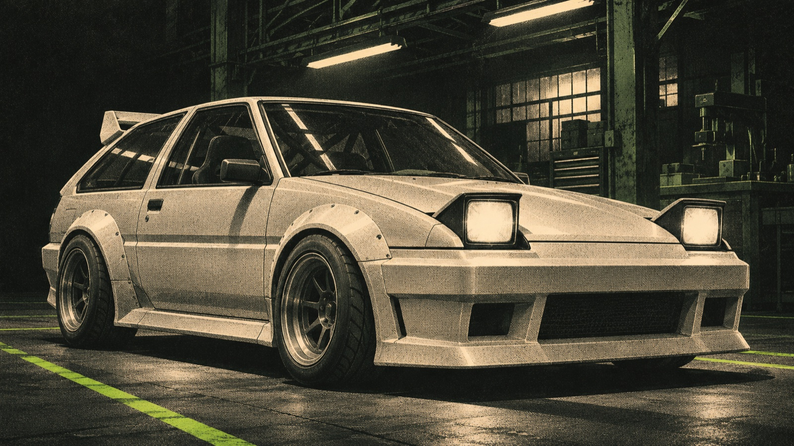
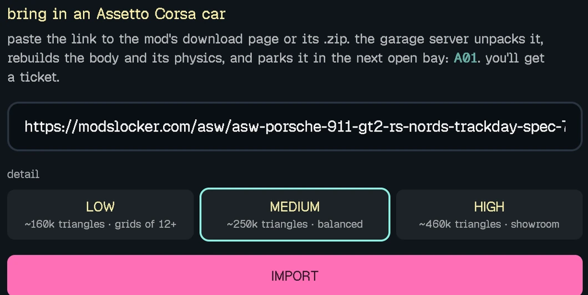

COMMUNITY GARAGE
Assetto Corsa
cars. In Spawn.
Drive cars the community has already brought in, or import a compatible car you’re missing. It’s free.

Pick a bay.
Two ways to use the Garage.
BAY A / SHARED LIBRARY
Already in the garage?
Try community-imported cars in Spawn Garage. If you’re building a game, add the Garage Library mod to use the shared cars in your own Spawn world.
Explore in SpawnBAY B / GARAGE IMPORTER
Don’t see your car?
Find a compatible Assetto Corsa mod you have permission to share. Paste its ModsLocker file-page URL into Spawn Garage. Once published to the shared library, the car can be used in other Spawn games that load the mod.
Get an import linkIMPORT GUIDE
From mod
to parking bay.
- Find a car. Browse Assetto World. Open the car’s download options and choose its ModsLocker mirror if available.
- Copy the page URL. Use the ModsLocker page for that specific ZIP or 7z car archive, not the catalog link or the downloaded file.
- Paste it in Spawn Garage. Open the import panel, choose Medium to start, and watch for the parking bay assignment.
IMPORT DESKFROM THE GAME
